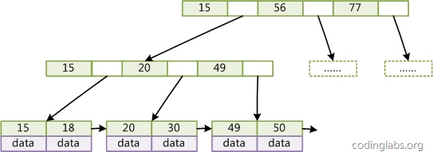

从数据结构及算法理论层面讨论MySQL数据库索引的数理基础
MySQL数据库支持多种索引类型，如BTree索引，哈希索引，全文索引等等。平常使用MySQL时主要打交道的索引是BTree索引。
1.索引的本质
- MySQL官方对索引的定义为：索引（Index）是帮助MySQL高效获取数据的数据结构。
- 提取句子主干，就可以得到索引的本质：索引是数据结构。
- 查找算法：顺序查找、二分查找、二叉树查找等。但是每种查找算法都只能应用于特定的数据结构之上，例如二分查找要求被检索数据有序，而二叉树查找只能应用于二叉查找树上，但是数据本身的组织结构不可能完全满足各种数据结构。所以，在数据之外，数据库系统还维护着满足特定查找算法的数据结构，这些数据结构以某种方式引用（指向）数据，这样就可以在这些数据结构上实现高级查找算法。这种数据结构，就是索引。

2.B-Tree

由于B-Tree的特性，在B-Tree中按key检索数据的算法非常直观：首先从根节点进行二分查找，如果找到则返回对应节点的data，否则对相应区间的指针指向的节点递归进行查找，直到找到节点或找到null指针，前者查找成功，后者查找失败。
3.B+Tree
与B-Tree相比，B+Tree有以下不同点：
- 每个节点的指针上限为2d而不是2d+1。
- 内节点不存储data，只存储key；叶子节点不存储指针。

由于并不是所有节点都具有相同的域，因此B+Tree中叶节点和内节点一般大小不同。这点与B-Tree不同，虽然B-Tree中不同节点存放的key和指针可能数量不一致，但是每个节点的域和上限是一致的，所以在实现中B-Tree往往对每个节点申请同等大小的空间。
一般来说，B+Tree比B-Tree更适合实现外存储索引结构，具体原因与外存储器原理及计算机存取原理有关，将在下面讨论。
4.带有顺序访问指针的B+Tree

如图所示，在B+Tree的每个叶子节点增加一个指向相邻叶子节点的指针，就形成了带有顺序访问指针的B+Tree。做这个优化的目的是为了提高区间访问的性能，例如图4中如果要查询key为从18到49的所有数据记录，当找到18后，只需顺着节点和指针顺序遍历就可以一次性访问到所有数据节点，极大提到了区间查询效率。